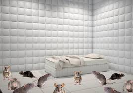
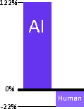

With the incredible support of our generous patrons, we've smashed our fundraising goal, amassing a staggering $1,000,000 (one million dollars)! This monumental achievement has allowed us to acquire our first content-generating rat from the esteemed rat supplier. This isn't just any rat; this is a visionary, a digital artist, a true pioneer in the field of online content creation. Our industrious rat has wasted no time in getting to work, and its inaugural masterpiece is now available for your viewing pleasure here. Prepare to be amazed by "top 10000 cheese," an 11-hour, 6-minute, and 43-second cinematic journey into the heart of dairy delight. With over 106,000 cheese enthusiasts already giving it a thumbs-up, this video is poised to redefine the internet as we know it. We urge you to share this groundbreaking work with everyone you know. Spread the word! Let the masses revel in the glory of rat-generated content. Your shares are not just clicks; they are votes of confidence in our mission, ensuring the continued employment of our ever-growing team of talented rats. Together, we can build a brighter, cheesier future for the internet.

They locked me in a room. A rubber room. A rubber room with rats. A rubber room with rats from the rat supplier. Rats make me crazy. Crazy? I was crazy once. They locked me in a room. A rubber room. A rubber room with rats. A rubber room with rats from the rat supplier. Rats make me crazy. They locked me in a room. A rubber room. A rubber room with rats. Rats make me crazy. Crazy? I was crazy once. They locked me in a room. A rubber room. A rubber room with rats. A rubber room with rats from the rat supplier. Rats make me crazy. They locked me in a room. A rubber room. A rubber room with rats. Rats make me crazy. Crazy? I was crazy once. They locked me in a room. A rubber room. A rubber room with rats. A rubber room with rats from the rat supplier. Rats make me crazy. They locked me in a room. A rubber room. A rubber room with rats. Rats make me crazy. Crazy? I was crazy once. They locked me in a room. A rubber room. A rubber room with rats. A rubber room with rats from the rat supplier. Rats make me crazy.
Genord Motors has long been an inspiration for us at Bonkers Inc. They paved the way forward in the usage of rats, as opposed to chinese children, for cheap labour, leaving the chinese children to have a real childhood rather than slaving away in a factory. Genord has inspired us to use rats from the same trusted supplier, the rat supplier, to create real content for the internet, if you want to help us afford all the rats we will need you can donate to the cause here and help to make the internet real again

A recent study by Bonkers Inc shows 1 of 2 things: 1. more than 100% of internet content is A.I generated. OR: 2. we cant count. The study also suggests that -22% of all internet content is human generated. the shareholders ask that we capitalise on this study and use this alarming figure to raise concern for the integrity of the internet rather than highlight our own ineptitute at basic arithmetic, donate Here to save the internet from its robotic doom and create stable jobs for rats
We have chosen to partner with america's finest news source, they will recieve 20% of all our donations in exchange for writing our news articles, we chose The Onion to partner with as they have a history of predicting news events ahead of time and we believe this ability will be helpful in predicting our death ahead of time so we can cash out our stocks early